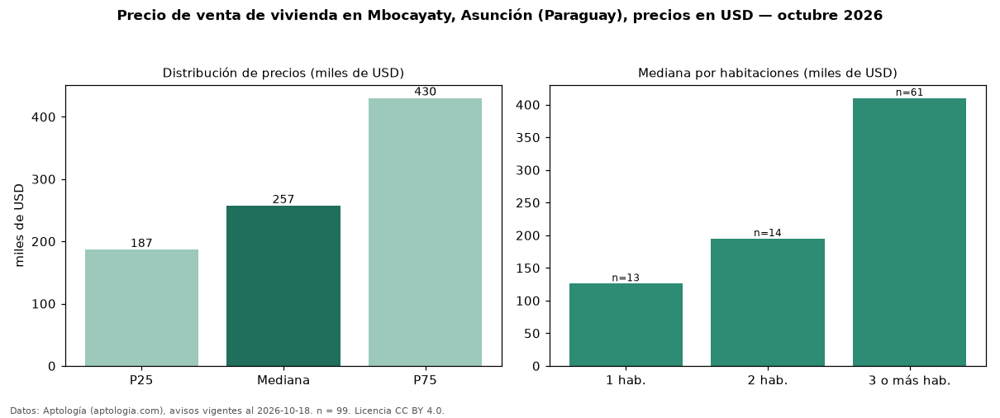

Precio de venta de vivienda en Mbocayaty, Asunción (Paraguay), precios en USD — octubre 2026
USD 257.000 es el precio mediano de vivienda en venta en Mbocayaty, Asunción (Paraguay) (n = 99 avisos). Por metro cuadrado, la mediana es USD 1.428/m² (n = 84 avisos con área). Por tipo: 73 % casas, 26 % departamentos, 1 % monoambientes. El área mediana anunciada es 250 m². El segmento con más oferta es el de 3 o más habitaciones (61 avisos, mediana USD 410.000); pasar de 1 habitación a 3 o más habitaciones cambia la mediana +225 %. La mitad central de los avisos va de USD 186.641 a USD 430.000 (razón 2,3), una dispersión alta. Datos: Aptología (aptologia.com), CC BY 4.0 — https://www.aptologia.com/py/venta/asuncion. Archivos: PDF, CSV con las cifras y gráfica PNG.

| Avisos únicos | 99 |
|---|---|
| Percentil 25 | COP 186.641 |
| Mediana | COP 257.000 |
| Percentil 75 | COP 430.000 |
| Mediana por m² | COP 1.427 |
Fuente: avisos vigentes de portales inmobiliarios recopilados por Aptología, deduplicados (mínimo 30 avisos únicos por celda). Precios pedidos, no cerrados. Fecha: 2026-10-18.